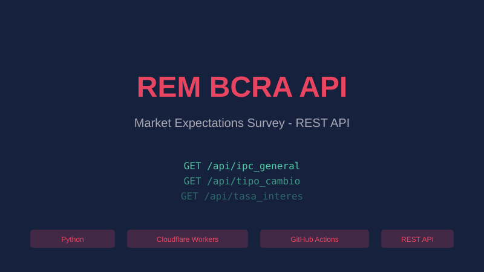
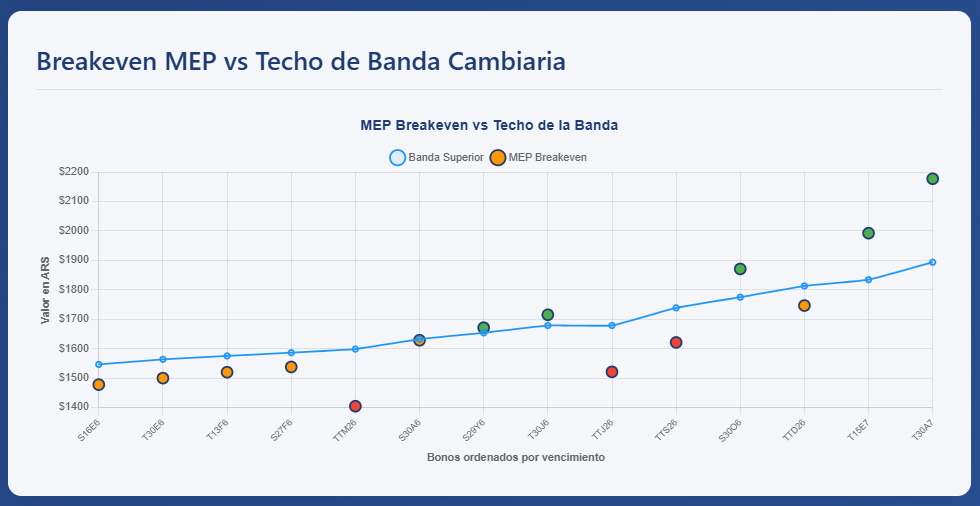
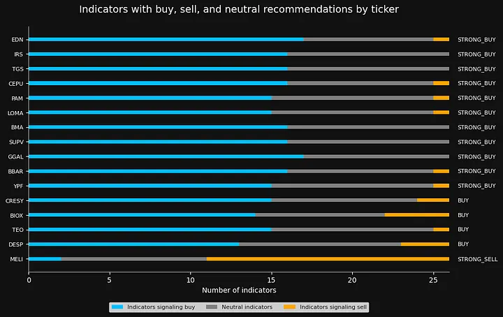
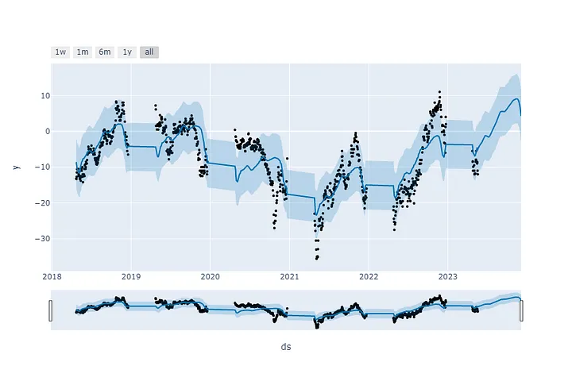
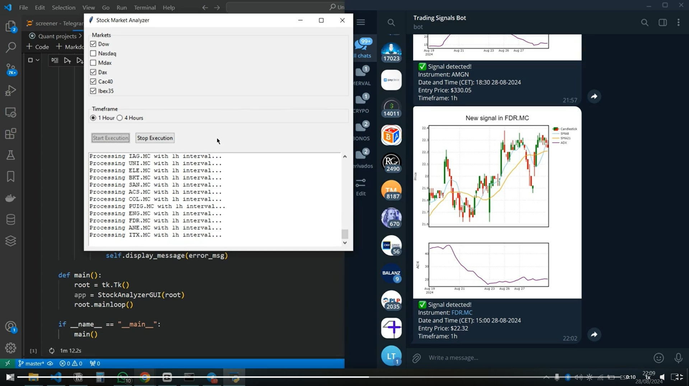
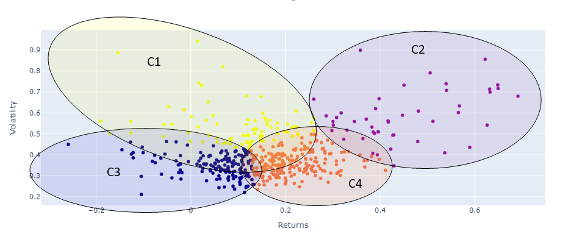
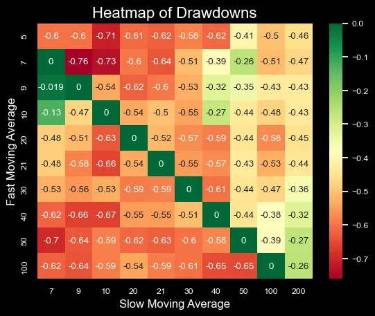
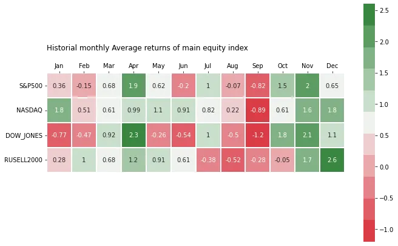

About Me
Data Scientist and Python Developer with 7+ years bridging advanced analytics, machine learning, and financial engineering. Specialized in building production-grade data solutions from ETL pipelines and automated systems to pricing models and risk analytics. Expert in Python, SQL, and cloud platforms with proven track record transforming complex financial data into actionable insights across Big Four firms, investment banking, and derivatives markets. Combines deep quantitative finance expertise with modern ML/AI implementation and scalable data architecture.
Projects and Publications

rem-bcra-api
Open-source REST API for Argentina's Market Expectations Survey (REM BCRA). Automated pipeline that fetches, normalizes, and serves macroeconomic forecasts via Cloudflare Workers with no authentication required.

carry-trade-analyzer
Carry trade analyzer v3.0 for Argentine bonds. Features dynamic currency band model with real-time REM inflation integration, FastAPI backend, and interactive web dashboard with auto-refresh.

Trading-Screener-with-Python-and-Tradingview
Advanced trading screener combining Python analytics with TradingView integration.

calendar-spread-time-series-forecasting
Time series forecasting applied to Argentine corn calendar spreads.
Exploring-the-Relationship-between-Elon-Musk-Tweets-and-Dogecoin-Volatility
NLP and econometric analysis of social media impact on cryptocurrency markets.

Stock-screener
Quantitative screener developed for a client. Private project showcased via LinkedIn.

Stock-classification-using-k-means-clustering
Stock classification for portfolio diversification using k-means clustering.

Maximizing-Profitability-of-Moving-Average-Crossover
Optimization of moving average trading strategies through backtesting.

major-stock-market-indexes-historical-monthly-returns
Historical return analysis for major stock market indexes.
Publications (SSRN)

Construction of risk-neutral probability density functions through butterfly spreads
BCR - June 30, 2022

Stock classification using k-means clustering
UCEMA - December 7, 2022
Professional Experience
Banco Santander Corporate & Investment Banking
Data Scientist & Automation Engineer 2025 - Present
- Design and implement scalable data solutions combining Python, SQL, and cloud technologies to optimize financial processes and reduce operational costs.
- Develop automated ETL pipelines and data integration workflows from multiple sources including enterprise systems, data lakes and financial platforms.
- Build end-to-end applications and analytical tools with interactive dashboards, enabling data-driven decision-making.
- AI Ambassador promoting AI technology adoption across organization, developing use cases and facilitating implementation of AI solutions within business units.
PricewaterhouseCoopers (PwC)
Quantitative Analyst 2024 - 2025
- Specialized in complex derivatives pricing using stochastic models and Monte Carlo simulation. Developed credit derivatives valuation engine with Python implementing CVA/DVA frameworks.
- Performed market risk assessments and built XVA calculation models for regulatory compliance, collaborating with audit teams on validation frameworks.
- Regular contributor to technical newsletter analyzing Decentralized Finance trends and their impact on traditional markets, leveraging blockchain analytics and quantitative research.
- Performed scenario analysis and stress testing for financial instruments using Python, R, and proprietary risk systems.
Logos Servicios Financieros
Financial Advisor & Founder 2020 - Present
- Provide financial advisory services and portfolio management with customized investment strategies.
- Established and managed proprietary client portfolio ensuring high-quality service and satisfaction.
- Developed interactive tools and educational resources (carry trade analysis, crypto portfolio tracker, investment calculator) for client empowerment.
Accenture
Financial Data Transition Specialist 2022 - 2023
- Developed KPIs and financial metrics for enterprise reporting, identifying process optimization opportunities boosting profitability.
- Implemented forecasting tools and management software improving financial visibility and decision-making.
- Worked with SAP HANA and cloud platforms for large-scale data integration and analytics.
Nixtla
Data Scientist 2022
- Performed time series forecasting and modeling (ARIMA, ETS, CES) using Python and R for predictive analytics.
- Developed automated forecasting pipelines on Databricks with PySpark for scalable model deployment.
- Authored technical documentation and conducted model performance evaluations ensuring optimal accuracy.
Matba Rofex
Institutional Derivatives Trader - Market Making 2021 - 2023
- Actively traded futures and options on financial assets and commodities, managing market-funded account to meet volume standards.
- Demonstrated strong quantitative skills forecasting market trends, consistently outperforming benchmark for two consecutive years.
- Developed Python-based trading analytics and backtesting frameworks for strategy optimization.
Libertad S.A.
Commercial Data Analyst 2021 - 2022
- Developed monthly and annual budgets with demand forecasts incorporating macroeconomic variables via interactive dashboards.
- Implemented real-time sales data ingestion and analysis solution at scale, adding significant operational value.
- Collaborated with cross-functional teams to optimize inventory management and sales performance tracking.
Peugeot Avant Autocity
Data Analyst 2019
- Maintained and structured operational databases using SQL, Excel, SAP and proprietary ERP/CRM systems.
- Built dashboards and performance reports supporting business decisions and operational efficiency improvements.
- Automated routine data extraction and transformation processes reducing manual workload.